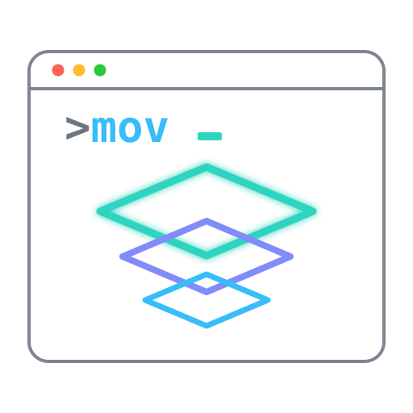

a CLI harness for Azure
An environment is one JSON file. mov reads it and drives az, gh, git and ssh underneath, so the work stays in the profile. Three places, and everything that passes between them.